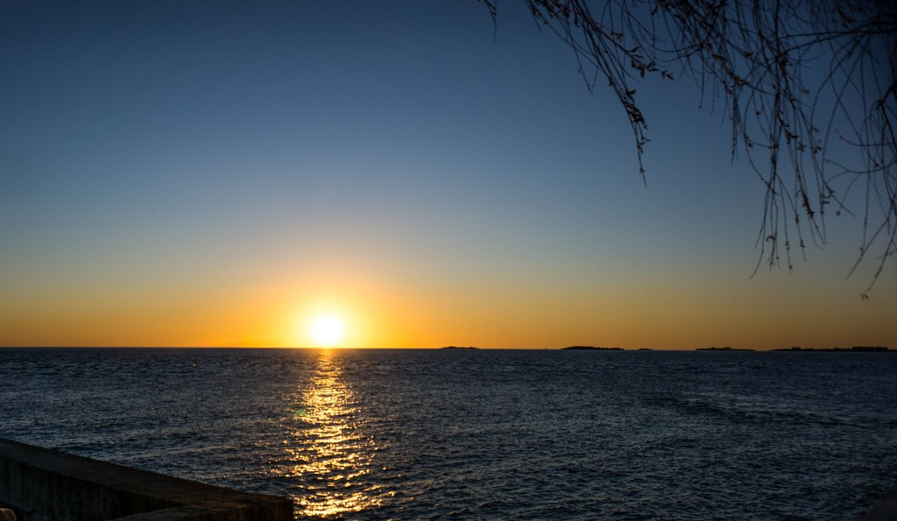

“This place reminds me of somewhere else,” I thought when I arrived in the town, “it’s so, well, so south European.”
And I was right as it turned out that Colonia del Sacramento was founded by the Portuguese in 1680 and you can experience charm that you might know from small cosy towns of Portugal where you wander along cobblestone streets and suddenly you are not in a hurry.
The historical quarter of Colonia del Sacramento became an UNESCO World Heritage site in 1995, but to be honest, I didn’t know about it, In fact when I was in Buenos Aires a few days before I had no idea that such a town even existed, but then I looked into a guidebook, found out that it was only 2 hours away by ferry so I pack by bag and set off.
It’s fascinating how it changed hands in the past. It was founded by the Portuguese, then the Spanish ruled it, then the Portuguese again, and Spanish one more time. And then… well the Portuguese, Spanish, Portuguese, Spanish. It was a part of the Liga Federal, then the Portuguese again, Brazilian rule next, and finally in 1828 it is in… Uruguay!
Tourists that mostly come from Buenos Aires are most interested in Barrio Historico (historical quarter) where they climb up the stairs of the Lighthouse to admire the panorama, go to the City Gate and a wooden drawbridge, stroll the cobblestone streets taking photos of old cars and then walk up to the waterfront to see the sunset and finally end up in one of numerous restaurant.
And this is exactly what I did.
An early afternoon:


An afternoon, but a bit later:


My sunset:

An evening spent with uruguayan wine, gnocci and salsa bolognese together with Feyza who I met a hostel a few hours before:


And this is El Viajero hostel (highly recommended!)


If you stay overnight a photo walk will be even better as you get the see the places in a totally different perspective, below the street of Whispers (Calle de los Suspiros) at the sunset and after the sunrise:


{kind=link}